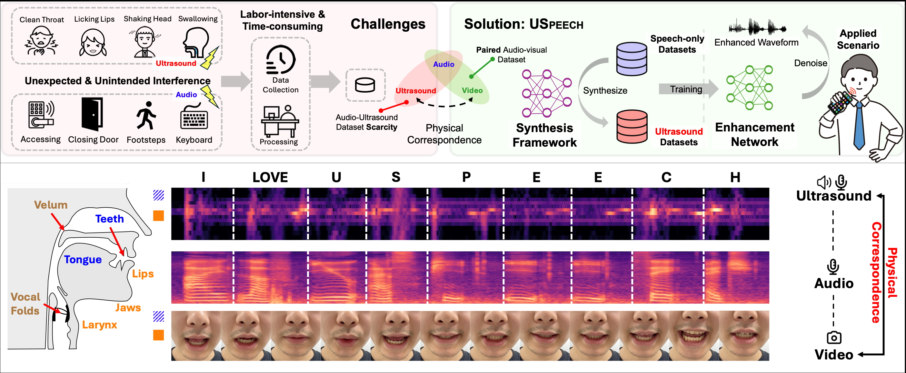

Speech enhancement is crucial for ubiquitous human-computer interaction. Recently, ultrasound-based acoustic sensing has emerged as an attractive choice for speech enhancement because of its superior ubiquity and performance. However, due to inevitable interference from unexpected and unintended sources during audio-ultrasound data acquisition, existing solutions rely heavily on human effort for data collection and processing. This leads to significant data scarcity that limits the full potential of ultrasound-based speech enhancement. To address this, we propose USpeech, a cross-modal ultrasound synthesis framework for speech enhancement with minimal human effort. At its core is a two-stage framework that establishes the correspondence between visual and ultrasonic modalities by leveraging audio as a bridge. This approach overcomes challenges from the lack of paired video-ultrasound datasets and the inherent heterogeneity between video and ultrasound data. Our framework incorporates contrastive video-audio pre-training to project modalities into a shared semantic space and employs an audio-ultrasound encoder-decoder for ultrasound synthesis. We then present a speech enhancement network that enhances speech in the time-frequency domain and recovers the clean speech waveform via a neural vocoder. Comprehensive experiments show USpeech achieves remarkable performance using synthetic ultrasound data comparable to physical data, outperforming state-of-the-art ultrasound-based speech enhancement baselines.

Section 2: Large-scale Ultrasonic Datasets
In this section, we demonstrate the recovery results of the collected physical SE dataset from the model trained on the Large-scale ultrasonic datasets, respectively, including LJSpeech, TIMIT, and VCTK. (See Section 7.2 in paper).
(1) LJSpeech
(2) TIMIT
(3) VCTK
Section 3: Long-duration Enhancement
In this section, we demonstrate the recovery results of the experiments on long-duration enhancement (See Section 7.6 in paper)